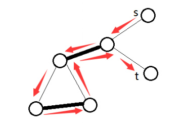
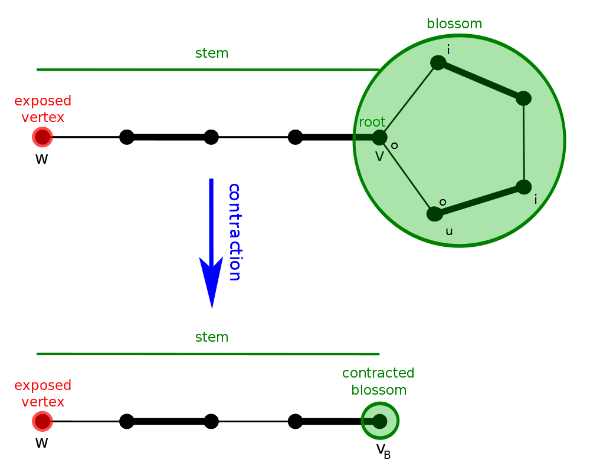
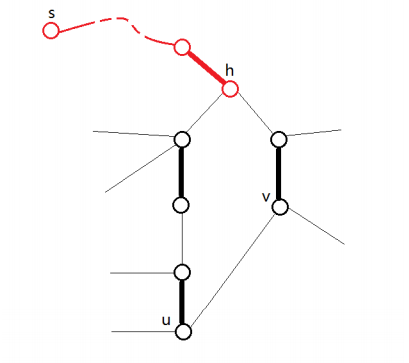
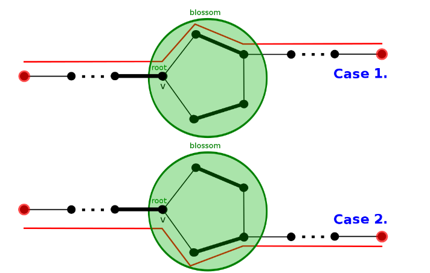

General match
带花树算法（Blossom Algorithm）
开花算法（Blossom Algorithm，也被称做带花树）可以解决一般图最大匹配问题（maximum cardinality matchings）．此算法由 Jack Edmonds 在 1961 年提出． 经过一些修改后也可以解决一般图最大权匹配问题． 此算法是第一个给出证明说最大匹配有多项式复杂度．
一般图匹配和二分图匹配（bipartite matching）不同的是，图可能存在奇环．

以此图为例，若直接取反（匹配边和未匹配边对调），会使得取反后的 $M$ 不合法，某些点会出现在两条匹配上，而问题就出在奇环．
下面考虑一般图的增广算法． 从二分图的角度出发，每次枚举一个未匹配点，设出发点为根，标记为 「o」，接下来交错标记 「o」 和 「i」，不难发现 「i」 到 「o」 这段边是匹配边．
假设当前点是 $v$，相邻点为 $u$，可以分为以下两种情况：
- $u$ 未拜访过，当 $u$ 是未匹配点，则找到增广路径，否则从 $u$ 的配偶找增广路．
- $u$ 已拜访过，遇到标记「o」代表需要 缩花，否则代表遇到偶环，跳过．
遇到偶环的情况，将他视为二分图解决，故可忽略．缩花 后，再新图中继续找增广路．

设原图为 $G$，缩花 后的图为 $G'$，我们只需要证明：
- 若 $G$ 存在增广路，$G'$ 也存在．
- 若 $G'$ 存在增广路，$G$ 也存在．

设非树边（形成环的那条边）为 $(u,v)$，定义花根 $h=LCA(u,v)$． 奇环是交替的，有且仅有 $h$ 的两条邻边类型相同，都是非匹配边． 那么进入 $h$ 的树边肯定是匹配边，环上除了 $h$ 以外其他点往环外的边都是非匹配边．
观察可知，从环外的边出去有两种情况，顺时针或逆时针．

于是 缩花 与 不缩花 都不影响正确性．
实作上找到 花 以后我们不需要真的 缩花，可以用数组纪录每个点在以哪个点为根的那朵花中．
复杂度分析 Complexity Analysis
每次找增广路，遍历所有边，遇到 花 会维护 花 上的点，$O(|E|^2)$．
枚举所有未匹配点做增广路，总共 $O(|V||E|^2)$．
参考代码
??? note "参考代码"
```cpp
// graph
template
vector<edge> edges;
vector<vector<int>> g;
int n;
graph(int _n) : n(_n) { g.resize(n); }
virtual int add(int from, int to, T cost) = 0;
};
// undirectedgraph
template <typename T>
class undirectedgraph : public graph<T> {
public:
using graph<T>::edges;
using graph<T>::g;
using graph<T>::n;
undirectedgraph(int _n) : graph<T>(_n) {}
int add(int from, int to, T cost = 1) {
assert(0 <= from && from < n && 0 <= to && to < n);
int id = (int)edges.size();
g[from].push_back(id);
g[to].push_back(id);
edges.push_back({from, to, cost});
return id;
}
};
// blossom / find_max_unweighted_matching
template <typename T>
vector<int> find_max_unweighted_matching(const undirectedgraph<T> &g) {
std::mt19937 rng(std::random_device{}());
vector<int> match(g.n, -1); // 匹配
vector<int> aux(g.n, -1); // 时间戳记
vector<int> label(g.n); // 「o」或「i」
vector<int> orig(g.n); // 花根
vector<int> parent(g.n, -1); // 父节点
queue<int> q;
int aux_time = -1;
auto lca = [&](int v, int u) {
aux_time++;
while (true) {
if (v != -1) {
if (aux[v] == aux_time) { // 找到拜访过的点 也就是LCA
return v;
}
aux[v] = aux_time;
if (match[v] == -1) {
v = -1;
} else {
v = orig[parent[match[v]]]; // 以匹配点的父节点继续寻找
}
}
swap(v, u);
}
}; // lca
auto blossom = [&](int v, int u, int a) {
while (orig[v] != a) {
parent[v] = u;
u = match[v];
if (label[u] == 1) { // 初始点设为「o」找增广路
label[u] = 0;
q.push(u);
}
orig[v] = orig[u] = a; // 缩花
v = parent[u];
}
}; // blossom
auto augment = [&](int v) {
while (v != -1) {
int pv = parent[v];
int next_v = match[pv];
match[v] = pv;
match[pv] = v;
v = next_v;
}
}; // augment
auto bfs = [&](int root) {
fill(label.begin(), label.end(), -1);
iota(orig.begin(), orig.end(), 0);
while (!q.empty()) {
q.pop();
}
q.push(root);
// 初始点设为「o」，这里以「0」代替「o」，「1」代替「i」
label[root] = 0;
while (!q.empty()) {
int v = q.front();
q.pop();
for (int id : g.g[v]) {
auto &e = g.edges[id];
int u = e.from ^ e.to ^ v;
if (label[u] == -1) { // 找到未拜访点
label[u] = 1; // 标记「i」
parent[u] = v;
if (match[u] == -1) { // 找到未匹配点
augment(u); // 寻找增广路径
return true;
}
// 找到已匹配点 将与她匹配的点丢入queue 延伸交错树
label[match[u]] = 0;
q.push(match[u]);
continue;
} else if (label[u] == 0 && orig[v] != orig[u]) {
// 找到已拜访点 且标记同为「o」代表找到「花」
int a = lca(orig[v], orig[u]);
// 找LCA 然后缩花
blossom(u, v, a);
blossom(v, u, a);
}
}
}
return false;
}; // bfs
auto greedy = [&]() {
vector<int> order(g.n);
// 随机打乱 order
iota(order.begin(), order.end(), 0);
shuffle(order.begin(), order.end(), rng);
// 将可以匹配的点匹配
for (int i : order) {
if (match[i] == -1) {
for (auto id : g.g[i]) {
auto &e = g.edges[id];
int to = e.from ^ e.to ^ i;
if (match[to] == -1) {
match[i] = to;
match[to] = i;
break;
}
}
}
}
}; // greedy
// 一开始先随机匹配
greedy();
// 对未匹配点找增广路
for (int i = 0; i < g.n; i++) {
if (match[i] == -1) {
bfs(i);
}
}
return match;
}
```
??? note "UOJ #79. 一般图最大匹配"
cpp
--8<-- "docs/graph/code/graph-matching/general-match/general-match_1.cpp"
基于高斯消元的一般图匹配算法
???+ tip "提示" 在阅读以下内容前，你可能需要先阅读「线性代数」部分中关于矩阵的内容：
- [矩阵](../../math/linear-algebra/matrix.md)
- [行列式](../../math/linear-algebra/determinant.md)
- [高斯消元](../../math/numerical/gauss.md)
这一部分将介绍一种基于高斯消元的一般图匹配算法．与传统的带花树算法相比，它的优势在于更易于理解与编写，同时便于解决「最大匹配中的必须点」等问题；缺点在于常数比较大，因为高斯消元的 $O(n^3)$ 基本是跑满的，而带花树一般跑不满．
前置知识：Tutte 矩阵
定义：对于一张 $n$ 个点的无向图 $G = (V, E)$，其 Tutte 矩阵 $\tilde{A}(G)$ 为一个 $n \times n$ 的矩阵，其中：
$$
\tilde{A}(G){i,j} = \begin{cases}
x{i,j}, & i
其中 $x_{i, j}$ 是一个变量，因此 $\tilde{A}(G)$ 中共有 $|E|$ 个变量．
在无歧义的情况下，以下将 $\tilde{A}(G)$ 简写为 $\tilde{A}$．
定理（Tutte 定理）：$G$ 存在完美匹配当且仅当 $\det \tilde{A} \ne 0$．
??? note "证明" 这里引入「偶环覆盖」的概念：一个无向图 $G$ 的偶环覆盖指用若干偶环（包括二元环）不重不漏地覆盖所有的点．
易证 $G$ 存在完美匹配当且仅当 $G$ 存在偶环覆盖．
- 如果 $G$ 存在偶环覆盖，我们只需要在每个环都隔一条取一条边，就可以得到一个完美匹配．
- 如果 $G$ 存在完美匹配，我们只需要将匹配边对应的二元环取出，就可以得到一个偶环覆盖．
然后证明 $G$ 存在偶环覆盖当且仅当 $\tilde{A} \ne 0$．
考虑行列式的定义
$$
\det A = \sum_{\pi} (-1)^{\pi} \prod_{i} A_{i, \pi_i}
$$
其中 $\pi$ 是任意排列，$(-1)^{\pi}$ 表示若 $\pi$ 中的逆序对数为奇数，则取 $-1$，否则取 $1$．
不难看出每个排列都可以被看作 $G$ 的一个环覆盖．如果这个环覆盖中存在奇环，则将这个环翻转后的和一定为 $0$，因此只有偶环覆盖才能使行列式不为 $0$，证毕．
定理：$\operatorname{rank}\tilde{A}$ 一定为偶数，并且 $G$ 的最大匹配的大小等于 $\operatorname{rank}\tilde{A}$ 的一半．
??? note "证明" 反对称矩阵的秩只能是偶数；后者请读者自行思考．
实际应用中不可能带着 $|E|$ 个变量进行计算，不过可以取一个数域，例如取某个素数 $p$ 的剩余系 $\mathcal{Z}_p$，将变量分别随机替换为 $\mathcal{Z}_p$ 中的数，再进行计算．方便起见，在无歧义的情况下，以下用 $\tilde{A}$ 直接指代替换后的矩阵．
定理：$\operatorname{rank}\tilde{A}$ 至多为 $G$ 的最大匹配大小的两倍，并且二者相等的概率至少为 $1 - \frac n p$．
考虑到一般图最大匹配中 $n$ 基本不会超过 $10^3$，实际中 $p$ 取 $10^9$ 数量级的素数就足够了．
由定理可知，如果只需要求最大匹配数，而无需匹配方案，那么只需要用一次高斯消元求出 $\operatorname{rank}\tilde{A}$ 即可，远比带花树简洁．不过如果需要输出方案，会稍微复杂一些，需要用到下面介绍的算法．
构造完美匹配
由 Tutte 定理和上面的定理可知，如果 $G$ 存在完美匹配，那么 $\tilde{A}$ 有很大概率满秩．方便起见，以下叙述中均省略「有很大概率」．
记 $G$ 中标号为 $i$ 的点为 $v_i$，进一步地我们有如下定理：
定理：$\tilde{A}^{-1}_{j,i} \ne 0 \iff G - {v_i, v_j}$ 有完美匹配．
???+ tip "逆矩阵与伴随矩阵" 对任意 $n$ 阶方阵 $A$，定义其伴随矩阵为 $A^{i, j} = (-1)^{i + j} M{j, i}$，其中 $M_{j, i}$ 为删去第 $j$ 行第 $i$ 列的余子式．换言之，设 $A$ 的代数余子式矩阵为 $M$，则 $A^ = M^T$．
**定理**：如果 $A$ 可逆，那么 $A^{-1} = \frac 1 {\det A} A^*$．
所以这里的 $A^{-1}_{j, i} \ne 0 \iff M_{i, j} \ne 0$，也就是 $A$ 删去第 $i$ 行第 $j$ 列后的部分满秩．
换言之，如果 $(v_i, v_j) \in E$，并且 $\tilde{A}^{-1}_{j, i} \ne 0$，就表明存在一个完美匹配方案包含 $(v_i, v_j)$ 这条边．以下将这种边称为 可行边．
由如上定理，对于一个有完美匹配的无向图 $G$，我们可以得到一个比较显然的暴力算法来寻找一组完美匹配：每次枚举 $i, j$，如果 $(v_i, v_j)$ 是一条可行边（连边存在，并且 $\tilde{A}^{-1}_{j, i} \ne 0$），就将 $(v_i, v_j)$ 加入匹配方案，并在 $G$ 中都删掉这两个点，再重新计算新的 $\tilde{A}^{-1}$．
总共要做 $\frac n 2$ 轮，每轮都是 $O(n^3)$ 的，总的复杂度是 $O(n ^ 4)$，有点慢了．实际上我们在重新计算 $\tilde{A}^{-1}$ 时，不必每次都重新用高斯消元求逆矩阵，而是可以利用如下定理：
定理（消去定理）：令
$$ A = \begin{bmatrix} a_{1, 1} & v^T \ u & B \end{bmatrix} \quad A^{-1} = \begin{bmatrix} \hat a^{1, 1} & \hat v^T \ \hat u & \hat B \end{bmatrix} $$
并且 $\hat a_{1, 1} \ne 0$, 那么就有
$$ B^{-1} = \hat B - \frac {\hat u \hat v^T} {\hat a_{1, 1}} $$
定理中描述的是消去第一行第一列的情况．实际上，它可以非常显然地推广到消去任意一行一列的情况，因此我们只需在算法最开始计算一次 $\tilde{A}^{-1}$，后面每次删除两个点时，只需执行两次 $O(n^2)$ 的消去过程即可．
??? note "描述有些抽象，可以参考 C++ 代码" ```cpp void eliminate(int A[][MAXN], int r, int c) { // 消去第 r 行第 c 列 row_marked[r] = col_marked[c] = true; // 已经被消掉
int inv = quick_power(A[r][c], p - 2); // 逆元
for (int i = 1; i <= n; i++)
if (!row_marked[i] && A[i][c]) {
int tmp = (long long)A[i][c] * inv % p;
for (int j = 1; j <= n; j++)
if (!col_marked[j] && A[r][j])
A[i][j] = (A[i][j] - (long long)tmp * A[r][j]) % p;
}
}
```
总共要做 $\frac n 2$ 轮，每轮复杂度为 $O(n^2)$，因此上述算法可以在 $O(n^3)$ 的时间内找到一组完美匹配．
构造最大匹配
我们刚刚已经解决了构造一组完美匹配的问题，但是求解问题时一般需要最大匹配．
前面已经提到，$G$ 的最大匹配大小等于 $\operatorname{rank}\tilde{A}$ 的一半．如果我们能找到 $\tilde{A}$ 的一个最大满秩子方阵，那么对子方阵对应的导出子图求出一组完美匹配，即可找到 $G$ 的一组最大匹配．
换一个角度考虑，如果 $G$ 有完美匹配，那么 $\tilde{A}$ 满秩，换言之，$\tilde{A}$ 是线性无关的．那么如果 $\tilde{A}$ 不是满秩的，我们可以求出 $\tilde{A}$ 的一组线性基，然后只保留线性基对应的行列，就可以得到 $\tilde{A}$ 的一个最大满秩子方阵．
求出最大满秩子方阵之后，再用上面的算法找出导出子图的一组完美匹配，即可得到原图的一组最大匹配．注意由于高斯消元中可能会有行的交换，因此实现时要注意维护好点的编号．
??? note "UOJ #79. 一般图最大匹配"
cpp
--8<-- "docs/graph/code/graph-matching/general-match/general-match_2.cpp"
习题
参考资料
- Mucha M, Sankowski P.Maximum matchings via Gaussian elimination
- 周子鑫，杨家齐《基于线性代数的一般图匹配》
- ZYQN 《基于线性代数的一般图匹配算法》